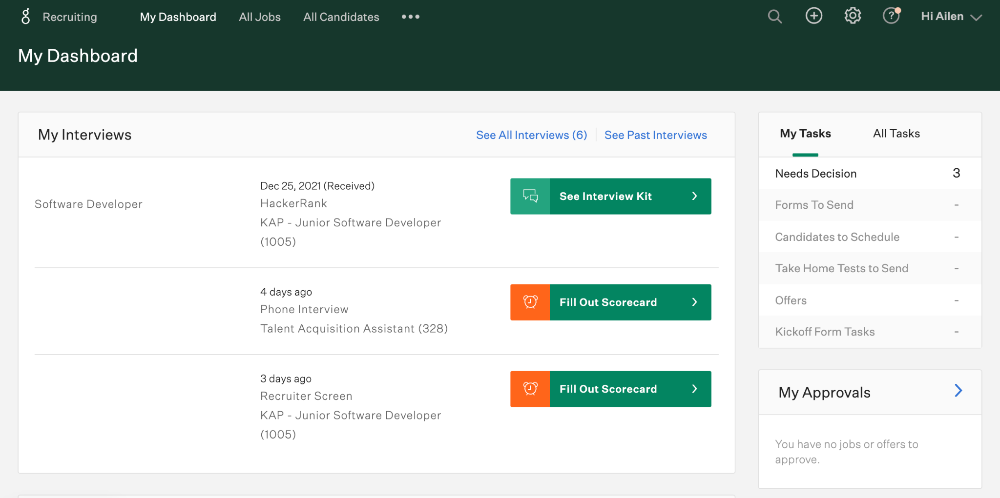

Es nuestro Applicant Tracking System (ATS), la principal herramienta de trabajo del equipo de TA, y que también hace uso todo Kin + Carta Américas cuando participan en entrevistas o para cargar referidos. Nos permite realizar muchos procesos en simultáneo
- Agregar nuevos candidatos
- Recibir ‘applicants’ y referidos
- Mover candidatos dentro del proceso
- Coordinar entrevistas
- Enviar emails a candidatos
- Dar "feedback" a candidatos
- Generar ofertas a potenciales candidatos a contratar
- Realizar reportes
My Dashboard
All Jobs
Aqui encontramos todos los jobs, abiertos y cerrados, de todas las locaciones. Utilizando los filtros podremos acotar los resultados de busqueda
Más informaciónAll candidates
Aqui encontramos todos los candidatos activos, hired, rejected, y de todas las locaciones. Utilizando los filtros de la columna izquierda podemos acceder a una selección determinada de candidatos.
Más información🔍
La manera más rápida para acceder al perfil de un candidato o al dashboard de un job
Más información